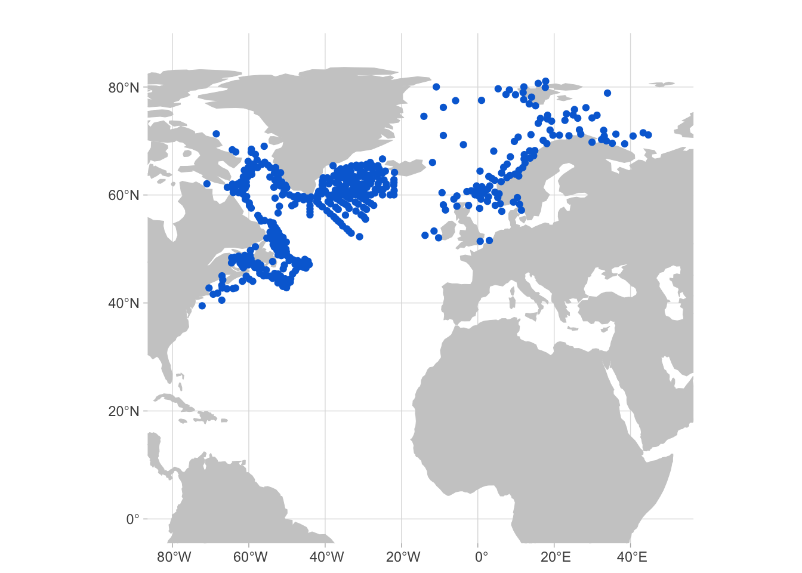
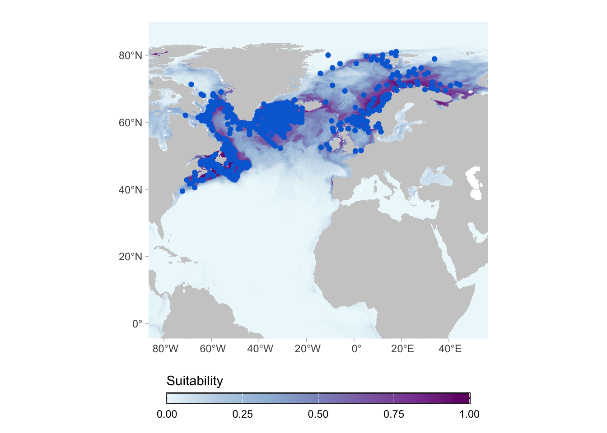
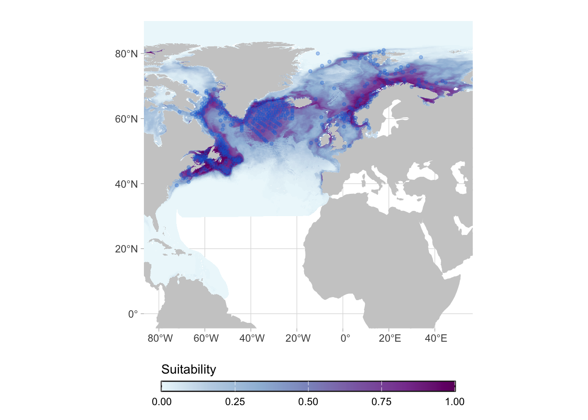
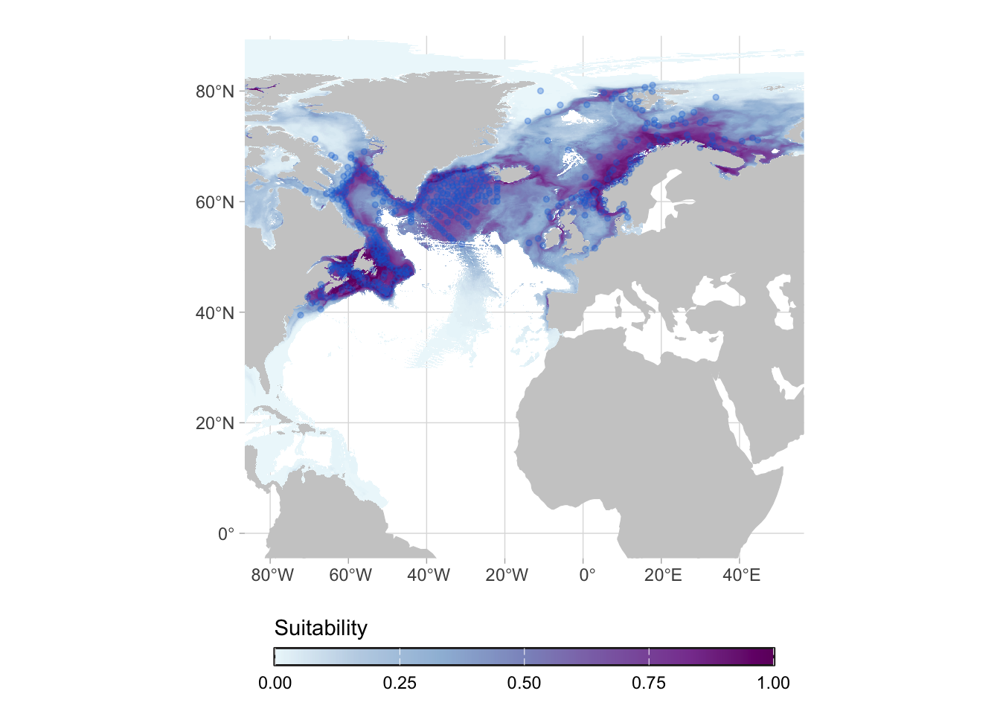
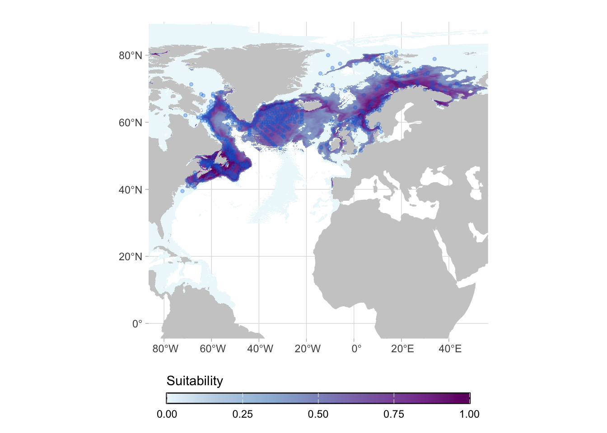
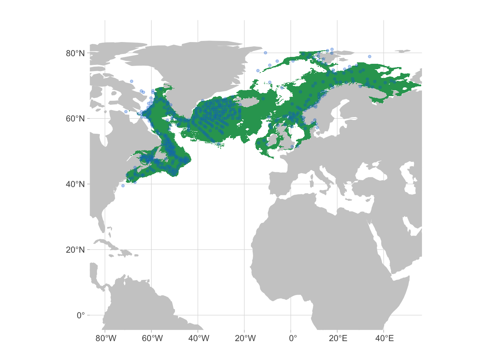
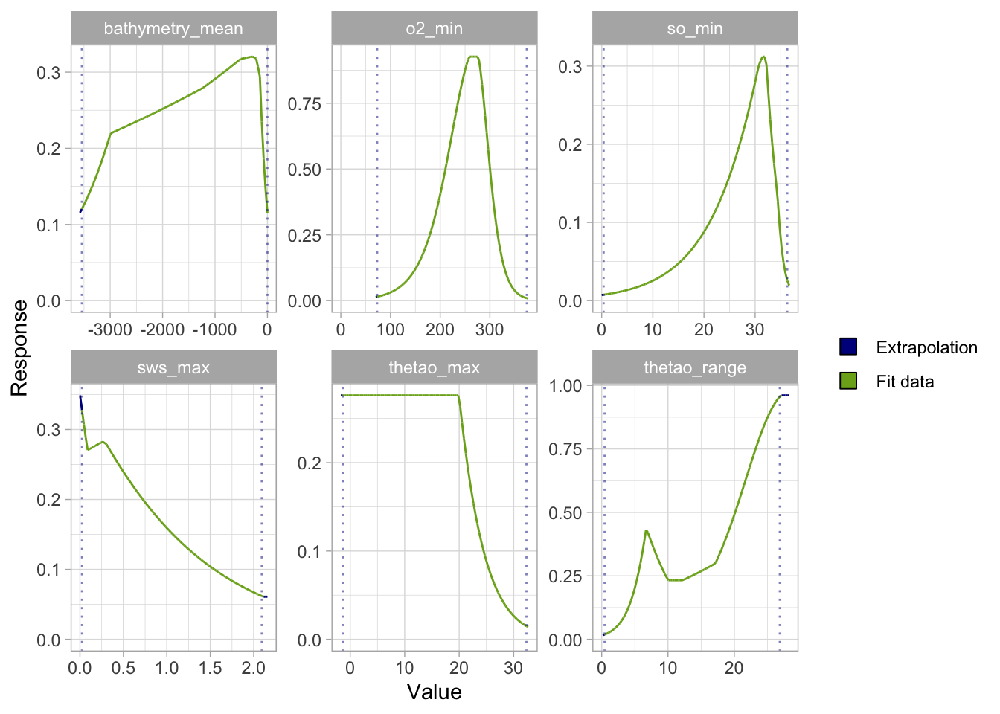

7 How to interpret SDM outputs?
Species distribution models (SDMs) are valuable tools for understanding how species are currently distributed and how their distributions may shift in the future. SDMs predict the geographic distribution of a species based on environmental conditions and known occurrence records. These models use statistical or machine learning methods to identify correlations between species presence and environmental variables. They are widely used in conservation planning, invasive species management, and biodiversity research.
SDMs indicate the potential distribution of the species. This is a key aspect: the “real” distribution of the species, specially on the small scale, may differ from the models because they do not incorporate aspecies such as competition, presence of specific substrates or dispersal capacity. However, SDMs give us a good overview of the range of the species, which is linked to the environmental conditions (e.g. temperature, salinity, oxygen, etc).
TipPotential range
SDMs show the potential range of the species, and small scale aspects may not be captured by the model.
Lets walk through an example. We will see the results for the species Sebastes norvegicus. Here are the occurrence records for this species:
When we fit the model, we predict it for the full area, even parts of the globe that are not (in principle) reachable by the species. This is important because those results can be used for studies of invasion potential, for example.

For most of the applications, however, we are interested in the actual range of the species (i.e. in its native range). For that we can work on the post-processing of the predictions.
TipPost-processing
Post-processing enables us to to further constrain the predictions, depending on the aim of the study.
The first post-processing that can be done is applying a mask to limit the predictions to the native range. Actually, native ranges are hard to delimit in an automated way. For this work we adopted marine realms to delimit native areas.

We can go one step further and limit it to the maximum depth at which the species was ever observed:

Note
This mask for maximum depth is a new feature, which will be available on the version 2. For now you can use the “Fit region” mask, which is similar, but include a buffer of 50m.
Another important step that can be taken to restrict the predictions to a core area is applying a threshold. Here we apply the P10 threshold, which remove the 10% of lowest values in occurrence records (i.e. remove areas with marginal conditions).

But we can go one step further. We can convert this into a binary format (coverting areas to “possible presence” or “possible absence”) and then remove patches that are not connected to the patches that have occurrence records. In the image below, the core area is shown in green.

You can apply other post-processiing steps depending on your objective. For example, if your target species only occur in a specific substrate and you have a layer describing substrate conditions, you can mask the predictions according to your substrate layer.
Again, it is important to highlight that the models represent the potential range of the species and maps show the relative suitability of the species.
7.1 How can I critically assess an SDM?
- Evaluate model performance metrics: check accuracy measures. Because we are using presence only data, the main one we are using is the Continuous Boyce Index (CBI). You can also check the AUC and TSS, to assess how well the model distinguishes between suitable and unsuitable areas.
| CBI | AUC | TSS |
|---|---|---|
| 0.8 | 0.9 | 0.6 |
- Inspect variable importance and ecological relevance: check that the environmental predictors used make ecological sense for the species and are not overfitted or redundant. You can also have a look at the response curves.

- Check data quality and bias: review the quality and spatial bias of occurrence records used in the model.
- Check evaluation with independent data (if available): for some species, a separate dataset was available to test model robustness beyond the training data.
- Interpret model outputs cautiously: remember that high predicted suitability doesn’t guarantee actual presence; consider dispersal limits, biotic interactions, and sampling errors.